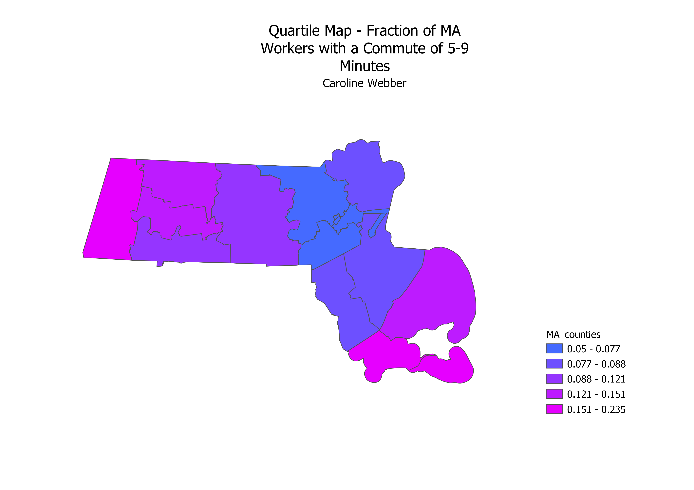
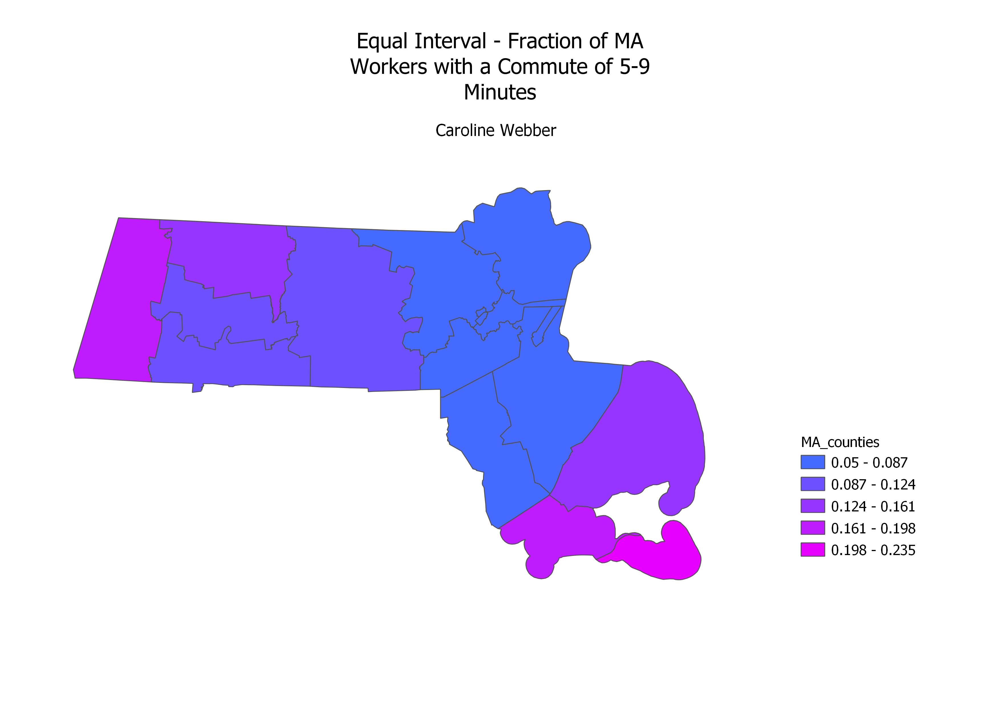
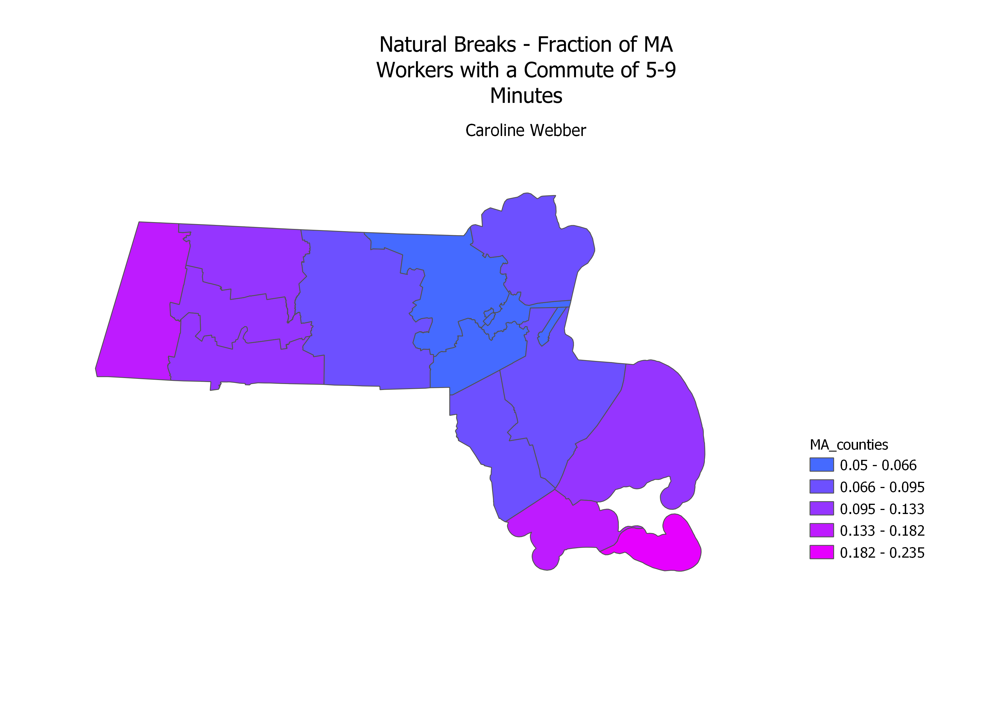

Homework 6 Part 2

The first mode I chose to look at was the quartile or equal count mode, which sorts the data into intervals containing equal number of data points. This classification is good at displaying relative values, but may not be the best choice if the data isn't evenly distributed, as values with a large difference can be grouped into the same class.

The second map displays the equal interval mode, which splits up the data into a specified number of intervals. This classification is easy to use, but because the intervals are predetermined, they don't necessarily faithfully represent the actual distribution of data.

The third map displays the natural breaks mode, which uses an algorithm to group data into classes at natural break points. This mode works well for data that isn't heavily skewed toward either end, but it is difficult to compare between two maps that classify data using natural breaks because the bins are highly dependent on each specific map.
The data from the US census that I chose to use was looking at the length of commute for people in Massachusetts. The dataset was split up by county, and had a column for a range of commute times: "less than five minutes", "five to nine minutes", "ten to fourteen minutes", and so on. In Part 1 of Homework 6, I looked at the percentage of MA workers with a commute of less than five minutes; for this assignment, I chose to look at the ratio of those with a commute of five to nine minutes. I joined the vector of MA counties to the cleaned CSV dataset using the state FIPS code and the geographic ID for each county. The fraction of the total number of workers with a commute of five-to-nine minutes is displayed for each county.
Link to MA counties GeoJSON in 4326 projection
Link to cleaned CSV file